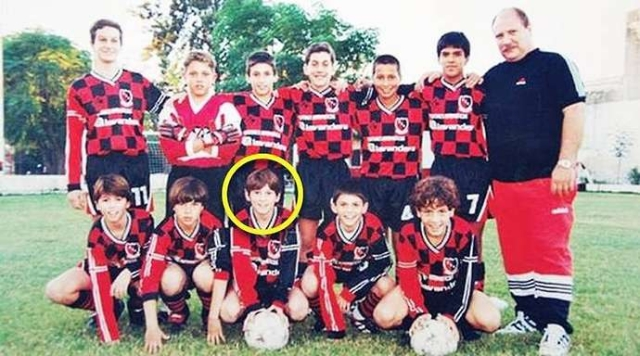
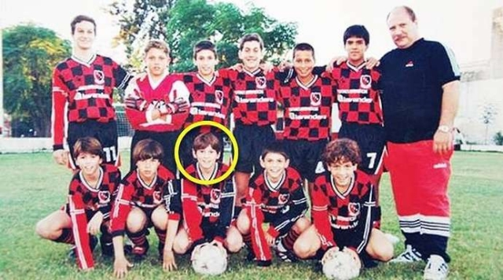

Lionel Andrés Messi Cuccittini (lahir 24 Juni 1987; umur 34 tahun) adalah seorang pemain sepak bola profesional yang bermain sebagai penyerang untuk Inter Miami dan tim nasional Argentina. Dia sering dianggap sebagai salah satu pemain terbaik sepanjang masa. Messi telah memenangkan enam Ballon d'Or dan empat Liga Champions. Messi memulai karirnya di Barcelona, di mana dia memenangkan 10 La Liga dan empat Liga Champions. Messi juga memenangkan Piala Dunia FIFA 2022 bersama Argentina. Messi telah memecahkan banyak rekor selama kariernya, termasuk menjadi pencetak gol terbanyak sepanjang masa di La Liga dan Liga Champions.
Messi The Goat
Fakta Menarik Tentang Klub yang Pernah Dibela Lionel Messi
Newell's Old Boys

Lionel Messi memulai karir sepak bolanya di klub Argentina,
Newell's Old Boys, saat masih sangat muda. Di sini, dia
menunjukkan bakat luar biasa yang menarik perhatian banyak klub
besar di Eropa.
Fakta menarik: Di usia 11 tahun, Messi didiagnosis dengan
kekurangan hormon pertumbuhan, dan klub ini tidak mampu menanggung
biaya pengobatannya.
Barcelona
Messi bergabung dengan akademi La Masia milik Barcelona pada tahun
2000. Debut profesionalnya bersama tim utama Barcelona terjadi
pada 16 Oktober 2004.
Fakta menarik: Messi mencetak 672 gol dalam 778 pertandingan
bersama Barcelona, menjadikannya pencetak gol terbanyak sepanjang
masa klub tersebut.
Selama di Barcelona, Messi meraih 10 gelar La Liga, 4 Liga
Champions, dan 7 penghargaan Ballon d'Or.
Paris Saint-Germain (PSG)
Setelah 21 tahun di Barcelona, Messi bergabung dengan Paris
Saint-Germain (PSG) pada Agustus 2021. Kepindahannya ini merupakan
salah satu transfer terbesar dalam sejarah sepak bola.
Fakta menarik: Di PSG, Messi mengenakan nomor punggung 30, nomor
yang sama saat ia pertama kali memulai karirnya di Barcelona.
Selama dua musim di PSG, Messi mencetak 32 gol dalam 75
pertandingan dan membantu klub memenangkan gelar Ligue 1.
Inter Miami
Pada tahun 2023, Messi membuat langkah mengejutkan dengan
bergabung ke klub MLS, Inter Miami, setelah meninggalkan PSG. Ini
adalah pengalaman pertamanya bermain di liga Amerika Utara.
Fakta menarik: Messi dengan cepat menjadi sorotan di MLS dan
membantu meningkatkan popularitas sepak bola di Amerika Serikat.
Sejak bergabung dengan Inter Miami, Messi telah mencetak lebih
dari 10 gol dan membantu klub mencapai babak playoff untuk pertama
kalinya dalam sejarah mereka.
Highlight Video
Newell's Old Boys
Lionel Messi memulai karir sepak bolanya di klub Argentina, Newell's Old Boys, saat masih sangat muda. Di sini, dia menunjukkan bakat luar biasa yang menarik perhatian banyak klub besar di Eropa.
Fakta menarik: Di usia 11 tahun, Messi didiagnosis dengan kekurangan hormon pertumbuhan, dan klub ini tidak mampu menanggung biaya pengobatannya.
Barcelona
Messi bergabung dengan akademi La Masia milik Barcelona pada tahun 2000. Debut profesionalnya bersama tim utama Barcelona terjadi pada 16 Oktober 2004.
Fakta menarik: Messi mencetak 672 gol dalam 778 pertandingan bersama Barcelona, menjadikannya pencetak gol terbanyak sepanjang masa klub tersebut.
Selama di Barcelona, Messi meraih 10 gelar La Liga, 4 Liga Champions, dan 7 penghargaan Ballon d'Or.
Paris Saint-Germain (PSG)
Setelah 21 tahun di Barcelona, Messi bergabung dengan Paris Saint-Germain (PSG) pada Agustus 2021. Kepindahannya ini merupakan salah satu transfer terbesar dalam sejarah sepak bola.
Fakta menarik: Di PSG, Messi mengenakan nomor punggung 30, nomor yang sama saat ia pertama kali memulai karirnya di Barcelona.
Selama dua musim di PSG, Messi mencetak 32 gol dalam 75 pertandingan dan membantu klub memenangkan gelar Ligue 1.
Inter Miami
Pada tahun 2023, Messi membuat langkah mengejutkan dengan bergabung ke klub MLS, Inter Miami, setelah meninggalkan PSG. Ini adalah pengalaman pertamanya bermain di liga Amerika Utara.
Fakta menarik: Messi dengan cepat menjadi sorotan di MLS dan membantu meningkatkan popularitas sepak bola di Amerika Serikat.
Sejak bergabung dengan Inter Miami, Messi telah mencetak lebih dari 10 gol dan membantu klub mencapai babak playoff untuk pertama kalinya dalam sejarah mereka.